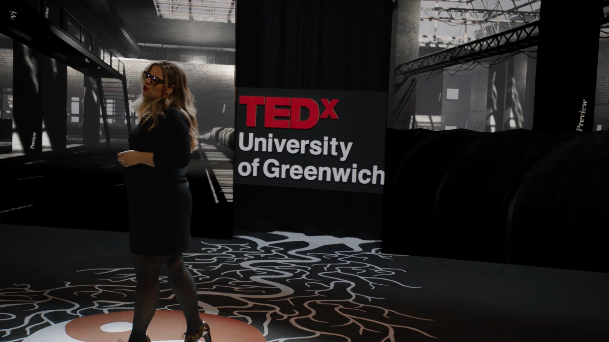
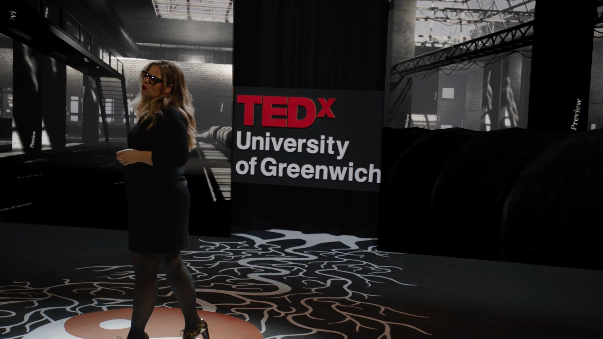

TEDx University of Greenwich: Journeys
2019 - 2021
Project Link
Working alongside filmmakers and theatre experts, I designed a TEDx sign, a series of stage panels, and a lightweight programme website for this hybrid live event/virtual production shoot

 
